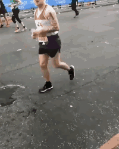
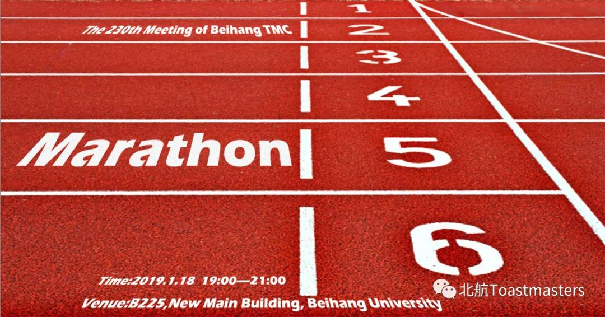

错过北航头马会议，跑再多的马拉松也追不回来。
----鲁迅
绳命在于头马

通过鲁迅的话我们可以知道，北航头马会议是非常值得参加的，如果错过一次，跑一次马拉松可能还可以弥补，但若经常错过，那么跑再多的马拉松也追不回来了。
后台有几万人私发我消息，说错过头马会议之后，整个人仿佛被抽空了灵魂一样，生命一下子失去了意义。如果我们会议不采取一些措施来补救，他们真不知道该怎么活下去了。
这便是我们本期主题设为《Marathon》的原因。
言归正传，本周北航头马将举办一期非常特别的演讲马拉松。顾名思义，就是边演讲边跑马拉松参加演讲的人数比常规会议多一倍啦，要知道，往期的常规会议，每一次只有3位演讲者，而这一次一共有7~8名备稿演讲者，将为大家带来满满的干货。无论你是想练习英语口语或听力，或是公众演讲的能力，再不然就是是期待演讲者分享的干货，这里都非常适合你。

想来吗
如何加入我们的会议？详见下面海报~如果英文水平堪忧，跟着我念：2019年1月18号晚七点，北航新主楼B225教室。
或者直接联系已经加入头马的小伙伴，组团过来~


海报|Chen
编辑|Chen
文案|Chen
原文链接（公众号关闭后可能失效）：
https://mp.weixin.qq.com/s/uoRbfAC8NgrVpgCeNeVYqA
https://mp.weixin.qq.com/s/uoRbfAC8NgrVpgCeNeVYqA
第 503/539 篇 · 北航Toastmasters英文演讲俱乐部公众号存档
本页为抢救式本地归档，图文已永久保存。
本页为抢救式本地归档，图文已永久保存。